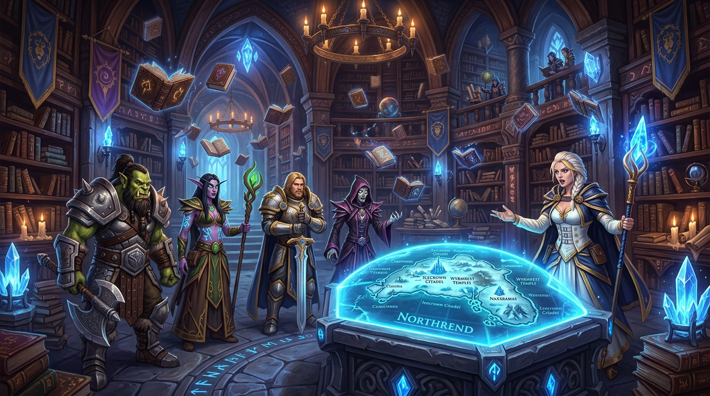

El Pilar Revolucionario: Lore Viviente
Inteligencia artificial generativa integrada en el núcleo del juego, sin latencia y con memoria persistente

Memoria y Diálogos Neuronales (LLM Local)
Lady Jaina procesa lenguaje natural en tiempo real mediante un modelo neuronal local (Qwen 2.5 3B / Llama). Recuerda tus hazañas pasadas, evalúa tu afinidad y reacciona a tus palabras con coherencia canónica absoluta.
HeroBot Autónomo de Mazmorra (GUID 1002)
Invoca a la Archimaga con .playerbots add Jaina. Equipada con Archus, Gran Báculo de Antonidas y un grimorio de 499 hechizos, asistirá tus raids adaptando dinámicamente sus rotaciones de Escarcha y Arcano.
Audio Espacial 3D por Proximidad (HRTF)
Escucha la voz de Jaina y de otros aventureros con cálculo binaural 3D en tiempo real según su distancia y ángulo cardinal en el mundo de juego. Inmersión sonora total sin necesidad de Discord.
Pase de Batalla & Desafíos Soberanos
Desafíos Hardcore, Ironman y sistema de progresión de temporada integrado con 18 AddOns oficiales remasterizados exclusivos para la experiencia Project Jaina.